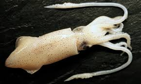

<DOCTYPE HTML>
    <html>
        <head>
            <title> Squids </title>
            <link href="https://fonts.googleapis.com/css2?family=Metal+Mania&display=swap" rel="stylesheet">
            <link rel="stylesheet" href="main.css">
            <meta name="viewport" content="width=device-width, initial-scale=1">
        </head>
        <body>
            <marquee scrollamount="1"
direction="right"
behavior="alternate">

<h1><span>Squids</span></h1>
</marquee>
            
            <div class="city">
                <h3 title="Squid are cephalopods in the superorder Decapodiformes with elongated bodies, large eyes, eight arms and two tentacles. Like all other cephalopods, squid have a distinct head, bilateral symmetry, and a mantle. They are mainly soft-bodied, like octopuses, but have a small internal skeleton in the form of a rod-like gladius or pen, made of chitin. Squid diverged from other cephalopods during the Jurassic and occupy a similar role to teleost fish as open water predators of similar size and behaviour. They play an important role in the open water food web. The two long tentacles are used to grab prey and the eight arms to hold and control it. The beak then cuts the food into suitable size chunks for swallowing. Squid are rapid swimmers, moving by jet propulsion, and largely locate their prey by sight. They are among the most intelligent of invertebrates, with groups of Humboldt squid having been observed hunting cooperatively. They are preyed on by sharks, other fish, sea birds, seals and cetaceans, particularly sperm whales. Squid can change colour for camouflage and signalling. Some species are bioluminescent, using their light for counter-illumination camouflage, while many species can eject a cloud of ink to distract predators. Squid are used for human consumption with commercial fisheries in Japan, the Mediterranean, the southwestern Atlantic, the eastern Pacific and elsewhere. They are used in cuisines around the world, often known as calamari. Squid have featured in literature since classical times, especially in tales of giant squid and sea monsters.">Hover your mouse over this text if you want squid facts</h3>
                                
</div>
            <h4> If you wish for music, click the song play button...</h4>
            <audio controls>
  <source src="TheFatRat%20&%20JJD%20-%20Prelude%20(VIP%20Edit).mp3">
Your browser does not support the audio element.
</audio>
            
            <marquee scrollamount="100"
direction="left"
behavior="alternate">

</marquee>
            <marquee scrollamount="100"
direction="up"
behavior="up">
SQUIDSSsssSSS
                <h1><span>What have I done</span></h1>
</marquee>
            <a href="https://youareanidiot.cc"></a>
            
            
            
            <h2>If you wish to read more about squids, click<a href="https://en.wikipedia.org/wiki/Squid"> HERE</a></h2>
        </body>
    </html>